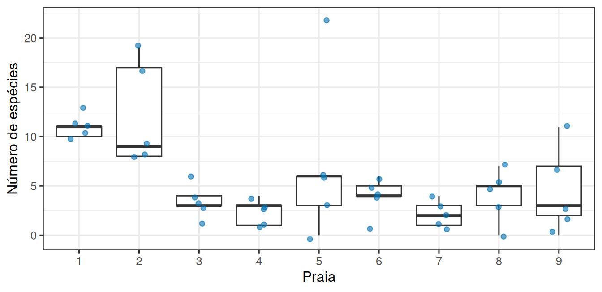

library(tidyverse)
theme_set(theme_bw(base_size = 12))A amostra representa a praia?
Prática em R 02
1 Objetivo desta prática
A leitura desta semana comparou duas estratégias de amostragem e mostrou que sortear praias inteiras produz estimativas mais instáveis do que sortear estações soltas. Você viu o resultado, e hoje vai medir essa instabilidade com as suas mãos, em dados reais, e descobrir uma coisa que a leitura não informa, que é quanto ela custa e o que muda quando você escolhe o número de praias.
O objetivo em R é importar dados de uma fonte externa, descrever o conjunto e sortear amostras dele.
Ao final, você entrega um script com quatro medidas de instabilidade calculadas por você e uma recomendação de delineamento justificada com esses números.
2 Preparação
Crie um script pr-amostragem.R com o mesmo cabeçalho de identificação da Prática 01 e comece por:
3 Abrir os dados
Um levantamento no litoral holandês registrou, em cada estação de amostragem, quantas espécies de invertebrados foram encontradas e a altura da estação em relação ao nível médio da maré. As estações se distribuem por nove praias.
Os dados estão em um arquivo de texto separado por tabulações, disponível na internet. Guardamos o endereço em um objeto e o passamos para read_tsv():
url <- "https://raw.githubusercontent.com/FCopf/datasets/refs/heads/main/zuur-2009-data-sets/RIKZ.txt"
rikz <- read_tsv(url, show_col_types = FALSE)
glimpse(rikz)Rows: 45
Columns: 5
$ Sample <dbl> 1, 2, 3, 4, 5, 6, 7, 8, 9, 10, 11, 12, 13, 14, 15, 16, 17, 18…
$ Richness <dbl> 11, 10, 13, 11, 10, 8, 9, 8, 19, 17, 6, 1, 4, 3, 3, 1, 3, 3, …
$ Exposure <dbl> 10, 10, 10, 10, 10, 8, 8, 8, 8, 8, 11, 11, 11, 11, 11, 11, 11…
$ NAP <dbl> 0.045, -1.036, -1.336, 0.616, -0.684, 1.190, 0.820, 0.635, 0.…
$ Beach <dbl> 1, 1, 1, 1, 1, 2, 2, 2, 2, 2, 3, 3, 3, 3, 3, 4, 4, 4, 4, 4, 5…São 45 linhas e 5 colunas:
Sample: identificador da estação;Richness: número de espécies encontradas;Exposure: índice de exposição da praia às ondas;NAP: altura da estação em relação à maré, em metros;Beach: identificador da praia.
Antes de calcular qualquer média, confira se o esforço de coleta foi o mesmo em toda parte:
rikz |> count(Beach)# A tibble: 9 × 2
Beach n
<dbl> <int>
1 1 5
2 2 5
3 3 5
4 4 5
5 5 5
6 6 5
7 7 5
8 8 5
9 9 5Cinco estações por praia, nas nove praias. Um levantamento equilibrado, o que nem sempre acontece.
Agora o resumo do conjunto inteiro, que servirá de referência o resto da aula:
rikz |>
summarise(
n = n(),
media = mean(Richness),
desvio = sd(Richness),
minimo = min(Richness),
maximo = max(Richness)
)# A tibble: 1 × 5
n media desvio minimo maximo
<int> <dbl> <dbl> <dbl> <dbl>
1 45 5.69 5.00 0 22Guarde a média das 45 estações, porque é contra ela que todas as suas estimativas serão comparadas.
4 As praias são todas parecidas?
ggplot(rikz, aes(x = factor(Beach), y = Richness)) +
geom_boxplot(outlier.shape = NA) +
geom_jitter(width = 0.15, alpha = 0.6, colour = "#0072B2") +
labs(x = "Praia", y = "Número de espécies")
5 Sortear uma amostra
A função slice_sample() sorteia linhas de uma tabela. Aqui pegamos 10 das 45 estações, como se o orçamento só permitisse isso:
rikz |>
slice_sample(n = 10) |>
summarise(media = mean(Richness))# A tibble: 1 × 1
media
<dbl>
1 6Execute essa linha duas ou três vezes. Cada execução sorteia dez estações diferentes e devolve uma estimativa diferente para a mesma região.
Também é possível sortear praias inteiras e usar todas as suas estações. O sample() sorteia os identificadores e o %in% mantém as linhas cujas praias foram sorteadas:
praias_sorteadas <- sample(1:9, size = 3)
praias_sorteadas[1] 5 6 9rikz |>
filter(Beach %in% praias_sorteadas) |>
summarise(n = n(), media = mean(Richness))# A tibble: 1 × 2
n media
<int> <dbl>
1 15 5.33São 15 estações, mais do que as 10 do sorteio anterior, mas vindas de apenas três praias.
6 Sua vez
Rodar uma linha algumas vezes dá uma impressão. Para ter uma medida, é preciso guardar as estimativas e resumir o quanto elas se espalham. Você já sabe fazer as duas coisas, porque c() monta um vetor e sd() mede o espalhamento.
6.1 Quanto o tamanho da amostra estabiliza a estimativa
# rode a linha abaixo CINCO vezes, anotando cada resultado
rikz |> slice_sample(n = 10) |> summarise(media = mean(Richness))
# escreva as cinco médias que você obteve
medias_10 <- c(____, ____, ____, ____, ____)
sd(medias_10)Repita todo o procedimento com n = 30, guardando em medias_30, e calcule o sd() das cinco.
6.2 A comparação justa
Sortear praias inteiras usa menos deslocamento e menos dias de viagem. A pergunta é quanto isso custa em precisão, e a comparação só é honesta se as duas estratégias medirem o mesmo número de estações.
Rode cinco vezes cada estratégia, guarde as médias em dois vetores e calcule os dois sd():
# cinco sorteios de praias inteiras (troque o size pelo número que você escolheu)
rikz |> filter(Beach %in% sample(1:9, size = ____)) |> summarise(media = mean(Richness))
# cinco sorteios de estações soltas, com o MESMO número de estações
rikz |> slice_sample(n = ____) |> summarise(media = mean(Richness))7 Entrega
Salve o script pr-amostragem.R com o cabeçalho preenchido. Antes de enviar, reinicie o R (Session → Restart R) e execute o script inteiro uma vez. Se ele parar em alguma linha, corrija. As respostas escritas vão no próprio script, como comentários iniciados por #.